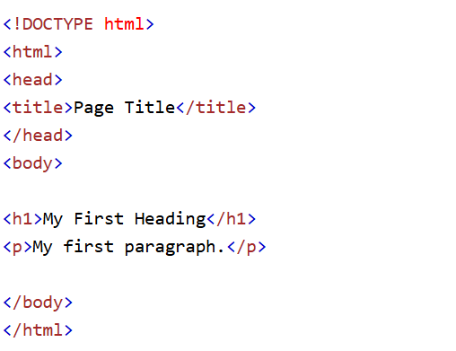
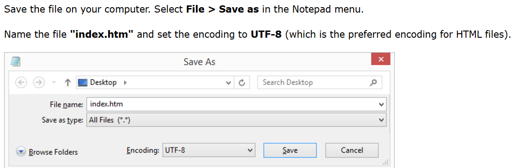
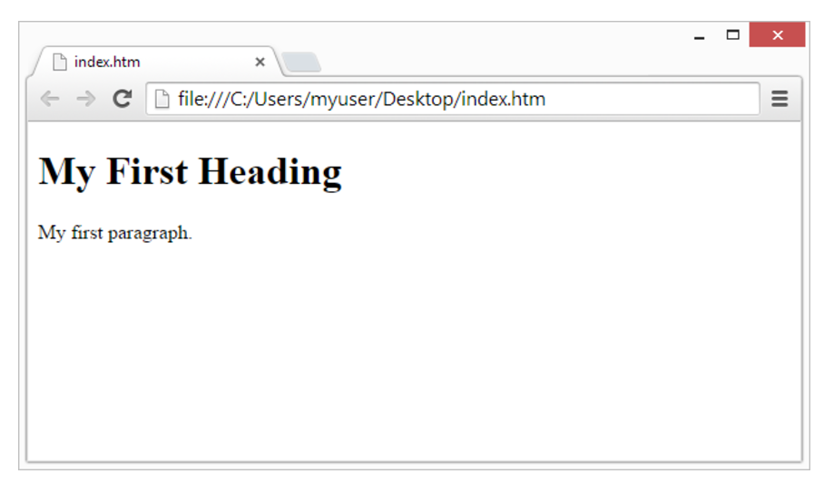

Web design is the process of creating websites that are attractive, functional, and engaging.
It involves planning, conceptualizing, and implementing a website's appearance, layout, and content.
Learning HTML using Notepad is a great way to get hands-on experience with web development. Notepad is a simple text editor, which makes it easy to focus on writing the raw code without distractions. Here's a step-by-step guide on how to learn HTML using Notepad:
Write Some HTML Code
Save the HTML Page
View the HTML page in your browser
